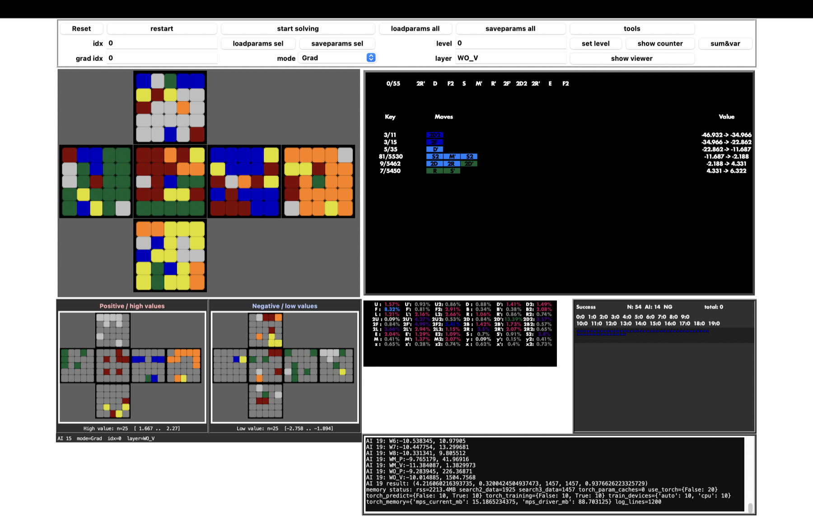

AI × PUZZLE × MATH 01COLORFUL CURIOSITY, SINCE ALWAYS.
キューブ王国と、
その外側。
数学を考え、キューブを回し、ときどき遠くへ行く。ここは、そんな少し変わった人の制作と記録の置き場です。
01 / THINK
数学
考えて、構造を見つける
02 / SOLVE
キューブ

03 / EXPLORE
旅
知らない場所へ行ってみる
04 / MAKE
制作
分かる形、遊べる形にする
ABOUT THIS PLACE
好きなものを深く掘り、
分かる形にして、
みんなで楽しむ。
キューブの手順を図にしたり、ゲームを考えたり、イベントを開いたり、旅の記録を残したり。ばらばらに見える興味を、ひとつの場所に集めました。
完成したものだけでなく、考えたことや試している途中のものも少しずつ置いていきます。
SELECTED PROJECTS
つくったもの、育てているもの
ひとつの色に収まらない活動を、プロジェクトごとに紹介します。
02
CUBE KINGDOM
今日は、何を揃える？
ケースを見比べながら、必要な手順へすぐ移動できます。